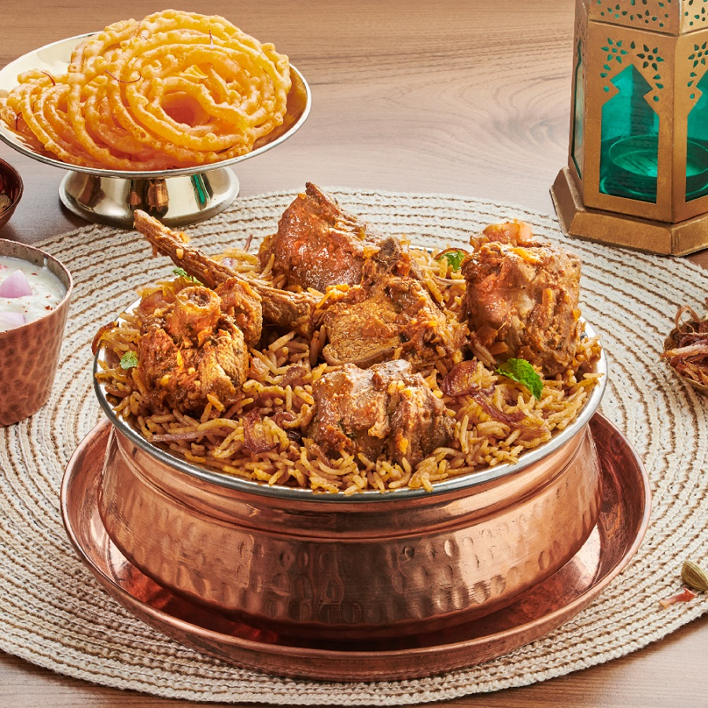

Biryani is a rich, aromatic mixed rice dish that holds a legendary status in South Asian cuisine and worldwide celebrations. Originating from Persian roots—derived from the word biryan (to fry or roast)—the dish evolved significantly in the royal kitchens of the Indian subcontinent during the Mughal era. It is masterfully prepared using fragrant long-grain basmati rice, tender cuts of meat (such as chicken, mutton, or goat), fresh vegetables, and a complex blend of warm spices like cardamom, cloves, cinnamon, and saffron. The hallmark of a great biryani is the traditional dum cooking method, where the partially cooked rice and marinated ingredients are layered in a sealed pot and slow-cooked in their own steam to lock in deep, intense flavors. Over centuries, numerous regional variations have flourished across the country, from the spicy and bold Hyderabadi biryani to the delicate aromas of Lucknowi style and the unique potato-laden plates of Kolkata. Usually served hot alongside cooling yogurt raita or spicy salan, biryani is much more than just a meal; it is a cherished centerpiece for weddings, festivals, and joyful family gatherings